Fraktale
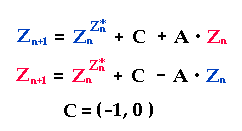
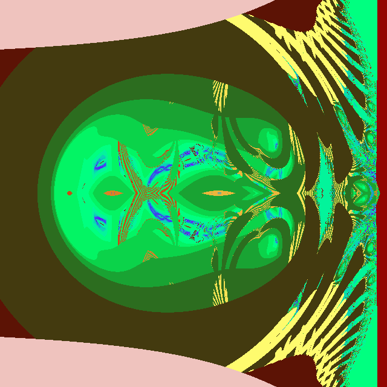
Kleinster
Verkopplungsparameter für normale Double-Zahlen: A=0.0003, Bildbreite=11000
Hier
wurden der Zahlenbereich für die Funktion pow() bereits in der ersten Iteration
überschritten (Farbe rosa).
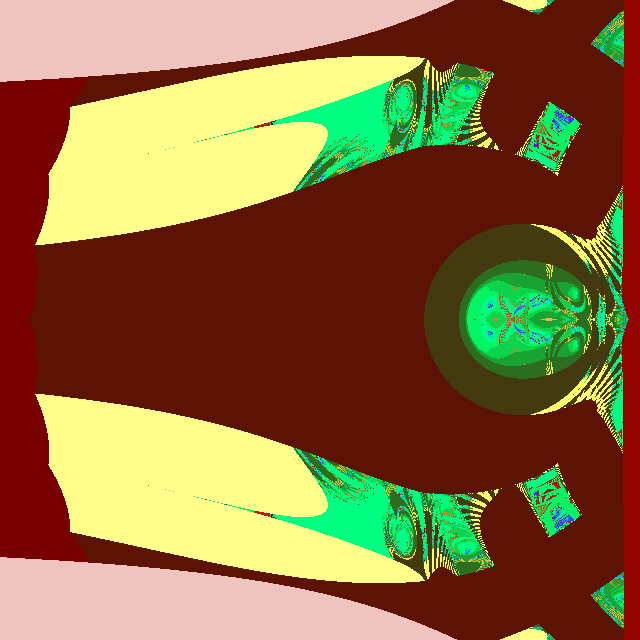
A=0.001,
Bildbreite=11000
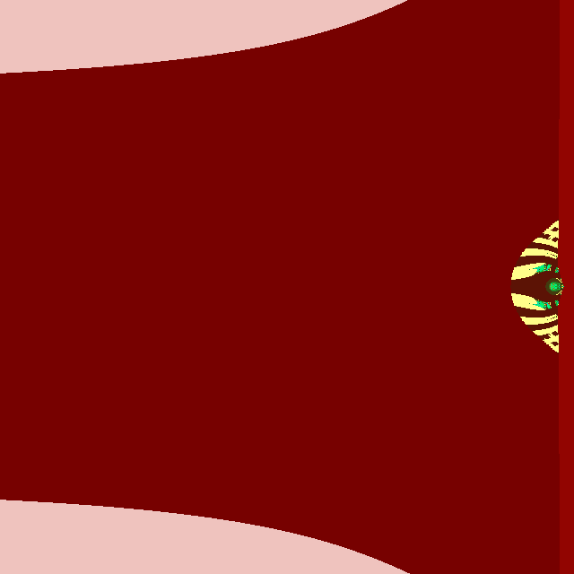
A=0.01,
Bildbreite=11000
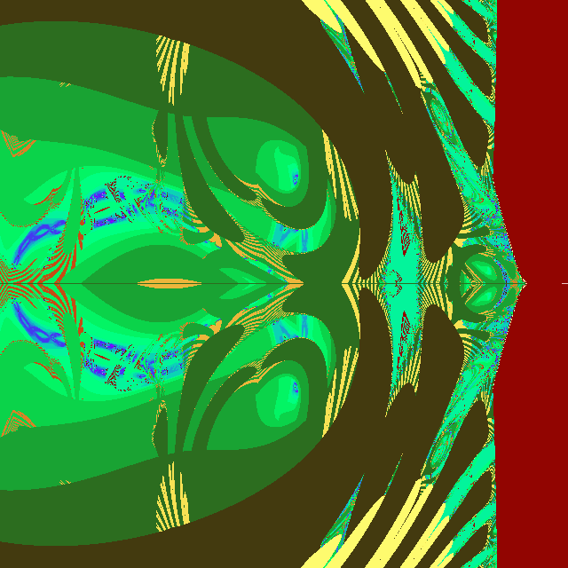
A=0.001,
Bildbreite=2200
Wie
das vorletzte Bild, aber näher herangezoomt (Faktor 20).
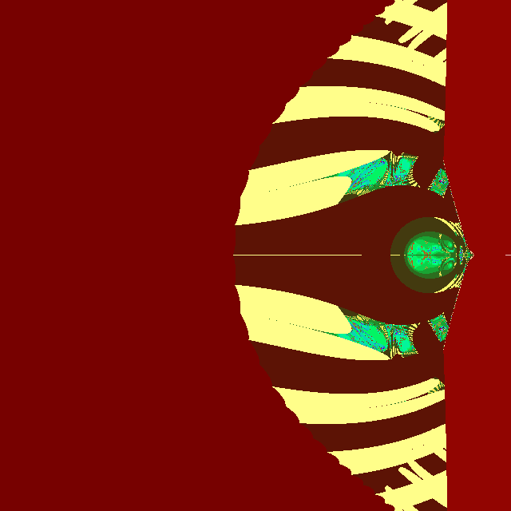
A=0.01,
Bildbreite=2200
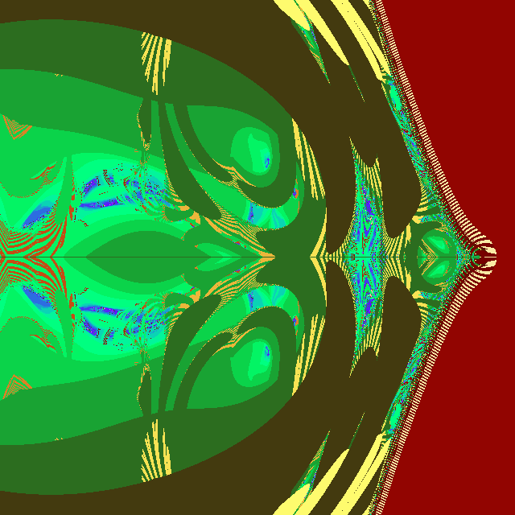
A=0.01,
Bildbreite=220
Wie
das letzte Bild, aber näher herangezoomt (Faktor 10).
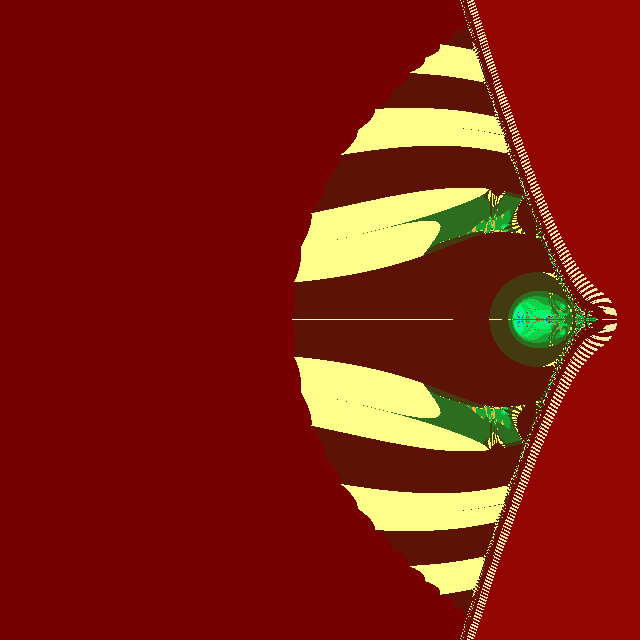
A=0.1,
Bildbreite=220
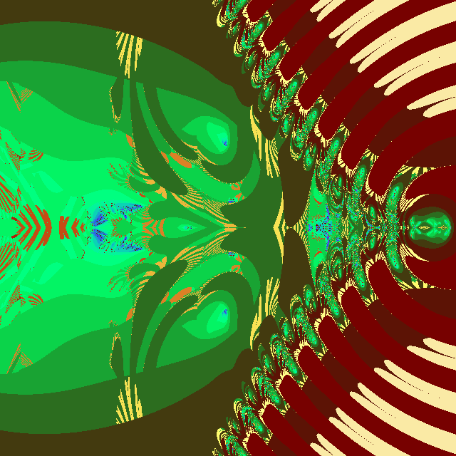
A=0.1,
Bildbreite=22
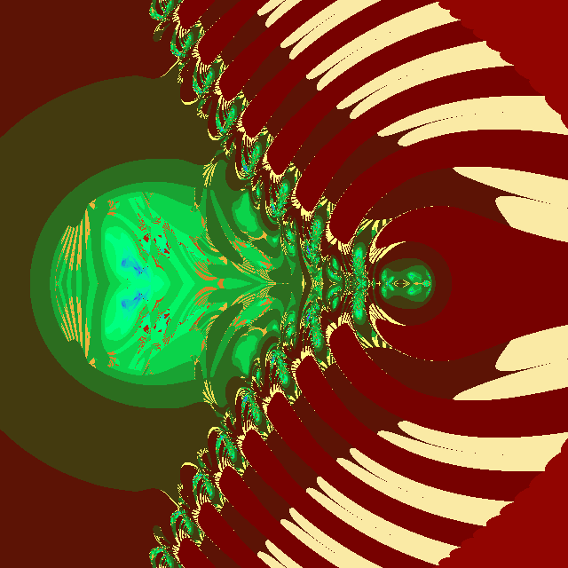
A=0.2,
Bildbreite=22
Dieses
nenne ich das Spinnentier mit Bauch. Der Kopf des Spinnentieres liegt über
dem Nullpunkt und lässt sich von A nicht viel beeinflussen.
Hier
ganz vom Nahen, mit Abbruch erst bei 1E+1000:
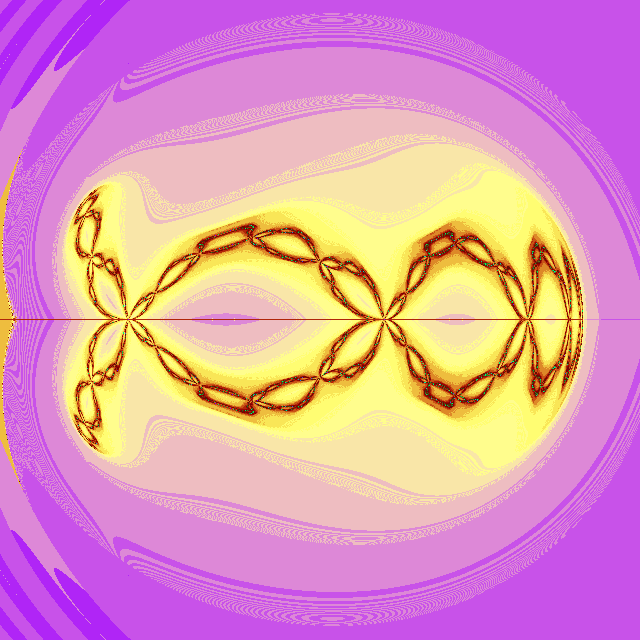
A=0.0,
Bildbreite=2.5, Mitte bei x=0.75, y= 0.0
Hier
ein paar Bilder nur vom Spinnentier (Abbruch bei 1E+9), die mit denselben Größen
A gerechnet wurden wie oben, nur näher herangezoomt.
Die Bildbreite ist
immer 5, die Bildmitte bei (0,0).
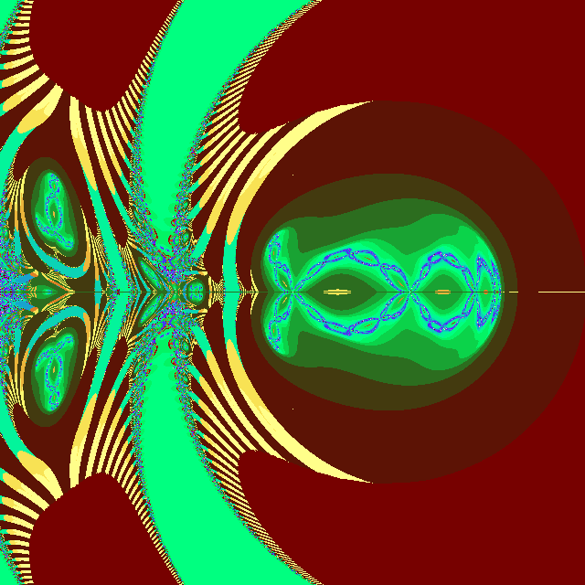
A=0.0
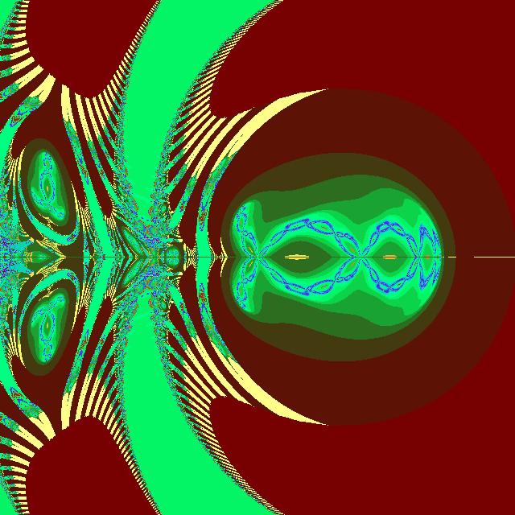
A=0.0003
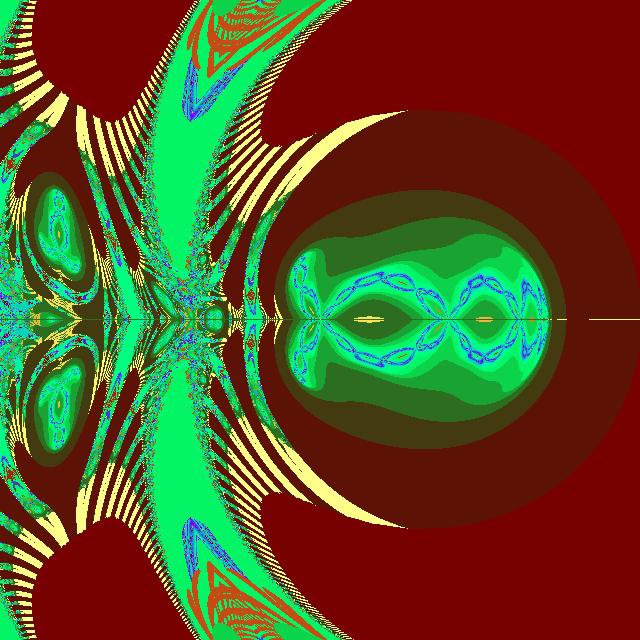
A=0.001
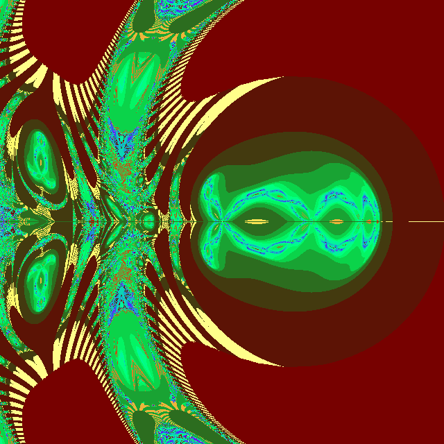
A=0.01
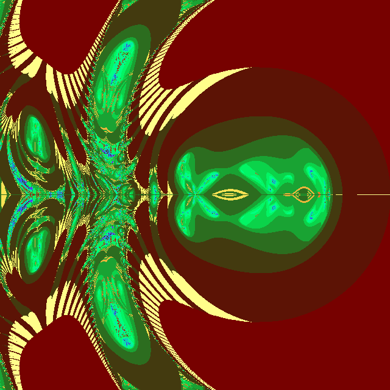
A=0.1
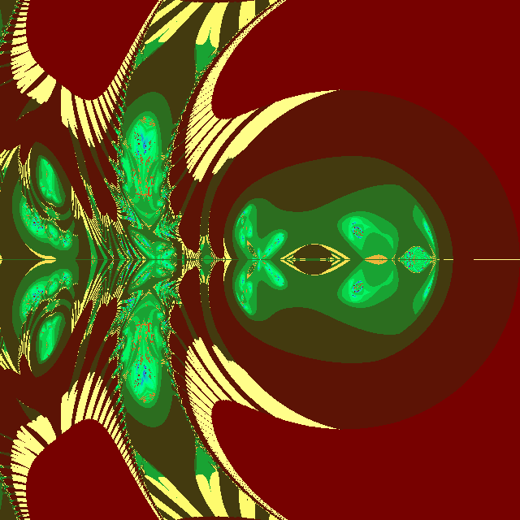
A=0.2
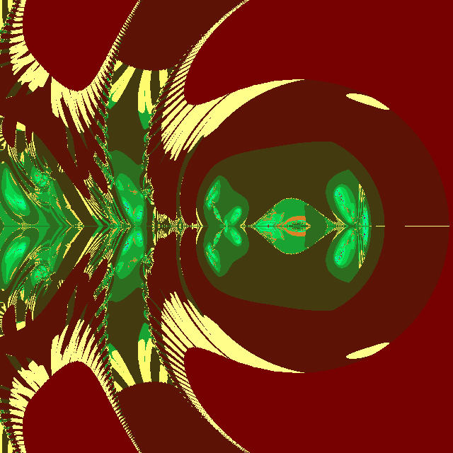
A=0.5
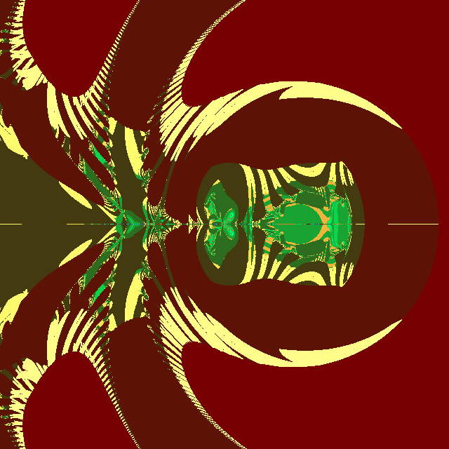
A=1.0
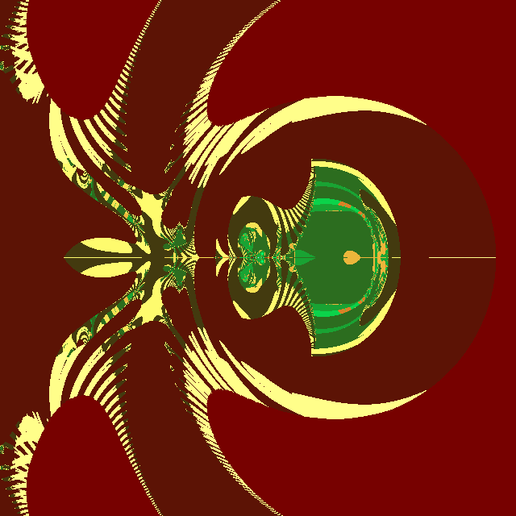
A=1.5
Wie
oben gezeigt, verändert sich das Bild, wenn man höhere Abbruchgrenzen
zulässt. Es ändert sich aber nur innere Struktur, nicht die Position.
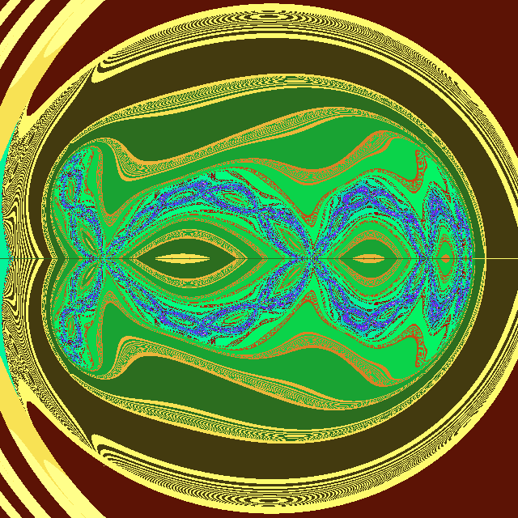
Abbruch
bei 1.0E+300, A=0
Hier
noch einmal der Schädel von A=0.001 mit Abbruch bei 1E+9, aber in einer anderen
Farbtabelle als oben:
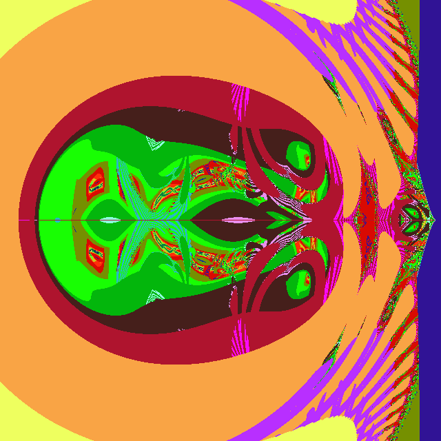
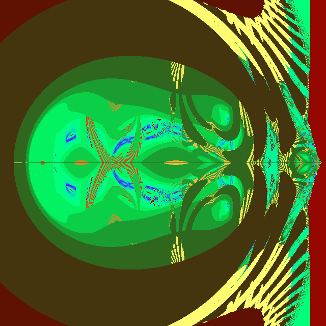
Abbruch
bei 1E+9, wie ganz oben alle
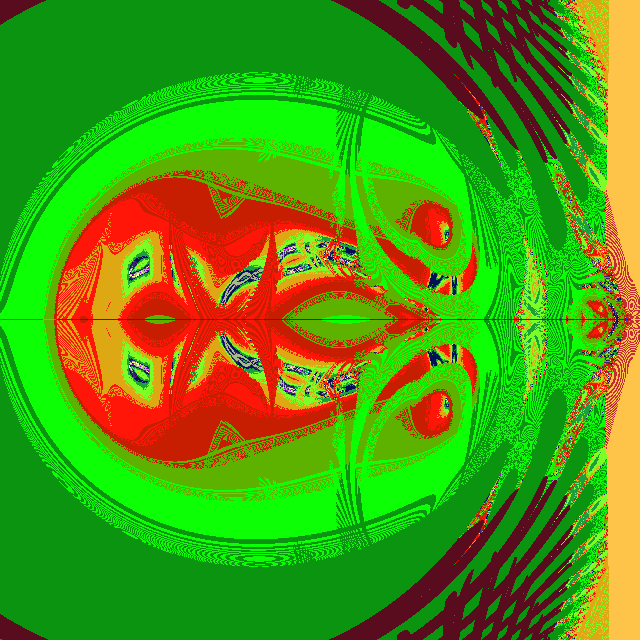
Schädel
wie im Bild vorher, Abbruch bei 1E+500
(beinhaltet aber Zahlenartefakte, weil
die Zahlen eigentlich bei E+307 enden)